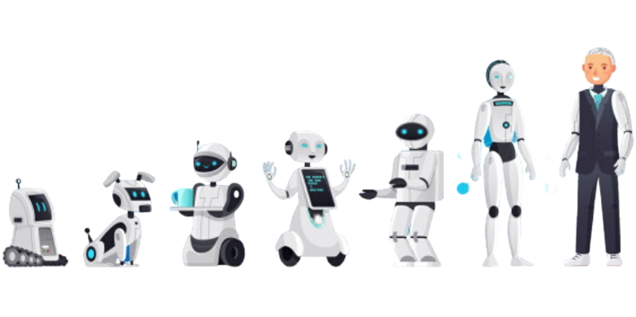

Robotique
La robotique désigne l'ensemble des techniques mises au point et
exécutées pour fabriquer des robots. Derrière cette signification
se cachent des possibilités infinies et un grand, un très grand
éventail de champs d'application. D'après l'ATILF, branche du Centre national de la recherche
scientifique (CNRS), un robot se définit comme une machine équipée
de
capteurs, d'actionneurs et d'un système logique. La robotique regroupe
par conséquent toutes les techniques développées pour créer ces
machines réelles ou virtuelles.

Ce terme a été employé pour la première fois au début des années
1940 dans un ouvrage de science-fiction de l'écrivain américain
intitulé « Menteur ! ». En réalité, la robotique est née bien
avant, au XVIIIe siècle, avec l'apparition des premiers automates
créés pour relever les défis de la Révolution industrielle.
L'automate devient robot lorsqu'il embarque des capteurs qui lui
permettent d'interagir avec son environnement. Cette habileté qui
le rend autonome et intelligent est qualifiée d'intelligence
artificielle.